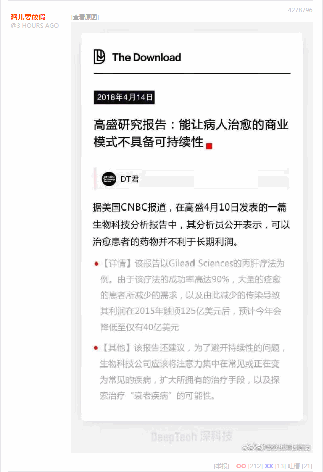
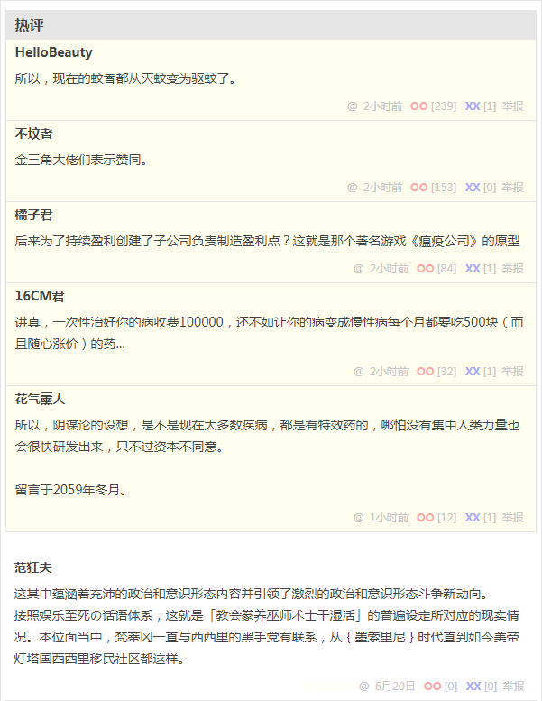

无聊图 4278796
所以，现在的蚊香都从灭蚊变为驱蚊了。
金三角大佬们表示赞同。
后来为了持续盈利创建了子公司负责制造盈利点？这就是那个著名游戏《瘟疫公司》的原型
讲真，一次性治好你的病收费100000，还不如让你的病变成慢性病每个月都要吃500块（而且随心涨价）的药...
所以，阴谋论的设想，是不是现在大多数疾病，都是有特效药的，哪怕没有集中人类力量也会很快研发出来，只不过资本不同意。
留言于2059年冬月。
这其中蕴涵着充沛的政治和意识形态内容并引领了激烈的政治和意识形态斗争新动向。
按照娱乐至死の话语体系，这就是「教会豢养巫师术士干湿活」的普遍设定所对应的现实情况。本位面当中，梵蒂冈一直与西西里的黑手党有联系，从墨索里尼时代直到如今美帝灯塔国西西里移民社区都这样。
补充
在已经补完的《仿佛复芬芳》当中已经提到了意大利的情况，按照常见的西幻设定形容，「教会」当然垄断了「圣水」的制造运输和分配环节，在「生产过剩」的情况下又不能如同倒牛奶那样把「圣水」倒掉，如何物尽其用还卖个好价钱并且不能给伟大光荣正确的「教会」脸上抹黑，当然就需要色目混混鸡鸣狗盗之徒毅然挺身而出喽。
这些地下工作者，身在黑暗心向光明，有条件要闹革命，没有条件，制造条件也要闹革命。为了配合组织筹措革命经费，纷纷发扬我不入地狱谁入地狱的大无畏的革命精神，它们的姓名无人知晓，它们的功绩万古长存。建议梵蒂冈修筑「无名烈士墓」并竖起「人民英雄纪念碑」。